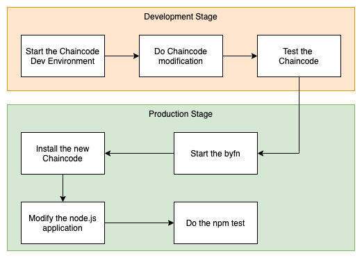
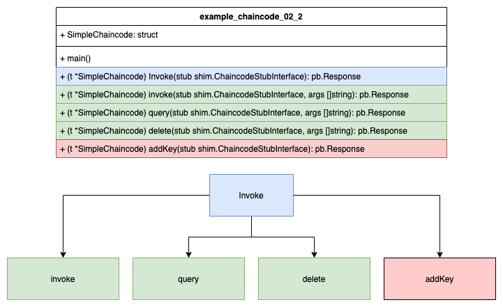

Modify the chaincode ex02
In this example we are going to modify the existing chaincode: chaincode_example_02. The goal of this example is as follows:
- Add a missing functionality, namely the addition of new assets.
- Ajust the suitable node.js application
Below you can see the flow diagram what we have to do. 
Below you can see a schematic representation of the chaincode.

Start the Chaincode Dev Environment
To start the dev network we are going to use tmux as a terminal multiplexer. First we create a new tmux session.
tmux new -s chaincode
Panel 1 - Start the Dev Network
Start the environment
Switch to panel 0. Make sure you are into the directory fabric-samples/chaincode-dev-docker.
CTRL + b q 0
# start the network
docker-compose -f docker-compose-simple.yaml up
Panel 2 - Build the Chaincode
Before we can build our new chaincode we have to do the modification on the chaincode. To do so we switch to the VS Studio Code IDE.
Modify the chaincode
Copy the target chaincode chaincode_example_02 in a new folder according to your docker-compose-simple.yaml file settings. We do that in a way to edit and build it.
chaincode:
container_name: chaincode
image: hyperledger/fabric-ccenv
tty: true
environment:
- GOPATH=/opt/gopath
- CORE_VM_ENDPOINT=unix:///host/var/run/docker.sock
- FABRIC_LOGGING_SPEC=DEBUG
- CORE_PEER_ID=example02
- CORE_PEER_ADDRESS=peer:7051
- CORE_PEER_LOCALMSPID=DEFAULT
- CORE_PEER_MSPCONFIGPATH=/etc/hyperledger/msp
working_dir: /opt/gopath/src/chaincode
command: /bin/sh -c 'sleep 6000000'
volumes:
- /var/run/:/host/var/run/
- ./msp:/etc/hyperledger/msp
- /root/fabric/hsc-chaincode:/opt/gopath/src/chaincode
depends_on:
- orderer
- peer
Watch out for the mounted volumne: /root/fabric/hsc-chaincode:/opt/gopath/src/chaincode. Copy the file to the target folder.
# where we are
pwd
/root/fabric/fabric-samples/chaincode-docker-devmode
# copy the chaincode into the mounted folder
cp -r ../chaincode/chaincode_example_02/go/ /root/fabric/hsc-chaincode
Start modify the chaincode. At the Invoke function we add the following else if block to introduce the new function:
else if function == "addKey" {
// add a new key (Asset)
return t.addKey(stub, args)
}
At the end of the file we add the following new function:
// add a new key (asset)
func (t *SimpleChaincode) addKey
(stub shim.ChaincodeStubInterface, args []string) pb.Response {
// representing new asset
var Key string
// representing the value of a new asset
var Keyval int
// representing an error
var err error
// we need two params a key(Asset) and a value
if len(args) != 2 {
return shim.Error("Incorrect number of arguments. Expecting 1")
}
// read the key
Key = args[0]
// read the value
Keyval, err = strconv.Atoi(args[1])
// Write the state back to the ledger
err = stub.PutState(Key, []byte(strconv.Itoa(Keyval)))
if err != nil {
return shim.Error(err.Error())
}
return shim.Success(nil)
}
Now we are ready to build and test our modified chaincode.
# Switch to the second region with the command.
CTRL + b q 1
# switch into the chaincode container
docker exec -it chaincode bash
# switch into the chaincode folder
cd go02
# build the chaincode
go build
# check the result
# you should see the go binary file.
ls -l
# now you can run the chaincode
CORE_PEER_ADDRESS=peer:7052 CORE_CHAINCODE_ID_NAME=mycc:0 ./go02
Panel 3 - Operate the Chaincode
docker exec -it cli bash
cd /opt/gopath
# install the chaincode
peer chaincode install -p chaincodedev/chaincode/go02 -n mycc -v 0
# instantiale the chaincode
peer chaincode instantiate -n mycc -v 0 -c '{"Args":["init","a","100","b","100"]}' -C myc
# check the chaincode
peer chaincode query -n mycc -c '{"Args":["query","a"]}' -C myc
# delete one asset
peer chaincode invoke -n mycc -c '{"Args":["delete","a"]}' -C myc
# check the chaincode again
peer chaincode query -n mycc -c '{"Args":["query","a"]}' -C myc
# add a new asset
peer chaincode invoke -n mycc -c '{"Args":["addKey","c","1000"]}' -C myc
# check the new asset
peer chaincode query -n mycc -c '{"Args":["query","c"]}' -C myc
# transfer from c to b
peer chaincode invoke -n mycc -c '{"Args":["invoke","c","b","500"]}' -C myc